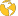

<html>
<head>
  <meta charset=utf-8 />
  <title>Mapa del ecosistema emprendedor en Málaga</title>
  <meta name='viewport' content='initial-scale=1,maximum-scale=1,user-scalable=no' />

    <!-- Load Leaflet from CDN -->
    <link rel="stylesheet" href="https://unpkg.com/leaflet@1.3.4/dist/leaflet.css"
    integrity="sha512-puBpdR0798OZvTTbP4A8Ix/l+A4dHDD0DGqYW6RQ+9jxkRFclaxxQb/SJAWZfWAkuyeQUytO7+7N4QKrDh+drA=="
    crossorigin=""/>
  <link rel="stylesheet" href="leaflet-geojson-selector.css" />
  <script src="jquery.min.js"></script>
    <script src="https://unpkg.com/leaflet@1.3.4/dist/leaflet.js"
    integrity="sha512-nMMmRyTVoLYqjP9hrbed9S+FzjZHW5gY1TWCHA5ckwXZBadntCNs8kEqAWdrb9O7rxbCaA4lKTIWjDXZxflOcA=="
    crossorigin=""></script>
<script src="leaflet-geojson-selector.js"></script>

    

    <link rel="stylesheet" href="style.css" type="text/css" />

    <script src="./startup.json" type="text/javascript"></script>
    <script src="./dist/leaflet-heat.js"></script>

	
    <link rel="shortcut icon" type="image/x-icon" href="./dist/img/favicon.ico" />
    <link rel="apple-touch-icon" sizes="180x180" href="./dist/img/apple-touch-icon.png">
    <link rel="icon" type="image/png" sizes="32x32" href="./dist/img/favicon32.png">
    <link rel="icon" type="image/png" sizes="16x16" href="./dist/img/favicon16.png">

    <link rel="mask-icon" href="./dist/img/safari-pinned-tab.svg" color="#5bbad5">


	
	

</head>
<div id="mapid" >
  <!--<div class="leaflet-bottom leaflet-right">-->
        <!--<button class="bZoom" onclick="bZoom()"  ></button>-->
 <!--</div>-->

 <div>
  <a href="https://www.uma.es/">
    
  </a>
</div>


<div>
  <a href="http://www.link.uma.es/">
    
  </a>
</div>

<div>
   <a href="https://www.uma.es/catedras/info/113424/catedras-andalucia-emprende/">
     
   </a>
</div>


</div>

<script>


var map = L.map('mapid',{zoomControl:false}).setView([36.732229, -4.439352], 10);


L.tileLayer('https://cartodb-basemaps-{s}.global.ssl.fastly.net/light_all/{z}/{x}/{y}{r}.png', {
    attribution: '&copy; <a href="http://www.openstreetmap.org/copyright">OpenStreetMap</a> &copy; <a href="http://cartometrics.com">Cartometrics</a>',
    subdomains: 'abcd',
    zoomControl: false,
    minZoom:5,
    maxZoom:20
}).addTo(map);


//Set view at startup 2nd parameter to zoom
map.setView([36.732229, -4.439352], 11);


  // cONTROL PARA EL CUADRO DE INFO
    var info = L.control();

    info.onAdd = function (map) {
        this._div = L.DomUtil.create('div', 'info');
        this.update();
        return this._div;
    };

    info.update = function (props) {
        // console.log(props);
        this._div.innerHTML = ''
		    +(props? '<br>': '')

        +(props? '<b><center style="color:#838383; margin-top:20px;">'+props.nombre+'</center></b>': '')

        +(props? '<br><b><center style="margin-left:5px;margin-right:5px;margin-bottom:5px"><a href="'+props.web+'">'+props.web+'</a></center></b>': '');


    };
    info.addTo(map);


map.addControl(customctrl());
map.addControl(customctr2());

//ICONOS
var result =[];
// replace Leaflet's default blue marker with a custom icon
function createCustomIcon (feature, latlng) {
  let myIcon = L.icon({
    iconUrl: './dist/img/astro2.png',

    iconSize:     [45, 44], // width and height of the image in pixels
    shadowSize:   [35, 20], // width, height of optional shadow image
    iconAnchor:   [22, 22], // point of the icon which will correspond to marker's location
    shadowAnchor: [12, 6],  // anchor point of the shadow. should be offset
    popupAnchor:  [0, 0] // point from which the popup should open relative to the iconAnchor
  })
    result.push([latlng.lat,latlng.lng]);
  return L.marker(latlng, { icon: myIcon })
}

map.addControl(customctr3(result));

L.control.zoom({
    position:'topright'
}).addTo(map);
function onEachFeature(feature, layer) {
    layer.on({
        mouseover: showInfo,
        //*mouseout: resetInfo,*//
        click: showInfo
    });
}


// create an options object that specifies which function will called on each feature
let myLayerOptions = {
  pointToLayer: createCustomIcon,
    // style: style,
  onEachFeature: onEachFeature
}

// create the GeoJSON layer

var geojson;


geojson = L.geoJSON(startup,myLayerOptions).addTo(map);

geoList = new L.Control.GeoJSONSelector(geojson, {
    zoomToLayer: true,
    listDisabled: true,
    activeListFromLayer: true,
    activeLayerFromList: true,
    listOnlyVisibleLayers: true
}).addTo(map);

// geoList.zoomToLayer = false;


function showInfo(e) {
    var layer = e.target;

      info.update(layer.feature.properties);
}

function resetInfo(e)
{
    geojson.resetStyle(e.target);
    info.update();
}

function zoomToFeature(e) {
    map.fitBounds(e.target.getBounds());
}


//cargamos el LINK
//var linkEdif = L.icon({
//    iconSize: [95, 82], size of the icon

//});

map.setView([40.060953, -4.048543], 12);


//add zoom control with your options
//L.control.zoom({
  //   position:'topright'
//}).addTo(map);


var marker = L.marker([36.718558, -4.497019]).addTo(map);

var bigIcon = L.icon({
    iconUrl: './dist/img/link.png',

    iconSize:     [150, 110], // size of the icon  width height
    iconAnchor:   [50,50], // point of the icon which will correspond to marker's location

});
var smallIcon = L.icon({
    iconUrl: './dist/img/pin.png',
    iconSize:     [50, 69], // size of the icon  width height
    iconAnchor:   [50, 50], // point of the icon which will correspond to marker's location

});

map.on('zoomend', function(ev){
  if (map.getZoom() > 14) {
    marker.setIcon(bigIcon);
  } else {
    marker.setIcon(smallIcon);
  }
})


//LOGOS PATROCINADORES
//logo position: bottomright, topright, topleft, bottomleft


</script>
</body>
</html>
